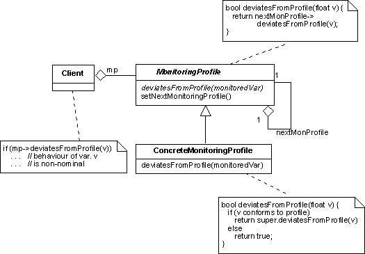

Variable Monitoring Design Pattern
Intent
Decouple the monitoring of the value of a variable from the time profile against which the monitoring is performed.
Based On
This pattern is based on the object monitoring design pattern of the AOCS Framework.
Motivation
Many OBS applications must be capable of performing a certain amount of failure detection checks. One important category of failure detection checks consists in monitoring the value of a variable to ensure that it follows a specified time profile. Deviation from this profile may indicate that a failure has occurred. Thus, for instance, a typical failure detection test checks that the value of a variable remains within a pre-defined range. In this case the time profile is simply given by the range of admissible values. In other case, it may be more complex. An example is a check that the output of a sensor should not "jump" by more than a pre-defined threshold. The admissible profile is then one where the variations across sampling points are less than the threshold.
Most on-board systems have similar requirements: they identify certain variables as in need of monitoring and specify for each the type of time profile that they should follow.
In most cases, this type of failure detection is performed by hard-coding the profile against which the monitoring is to be performed. The code that performs the monitoring thus becomes dependent on the monitoring profile. This design pattern allows the two to be separated. A natural extension of the design pattern also allows to decouple the monitoring action from the variable to be monitored.
Dictionary Entries
The following abstractions or domain-wide concepts are defined to support the implementation of this design pattern:
Structure
The variable monitoring design pattern proposes a representation for the monitoring profile abstraction. This
is represented by the MonitoringProfile abstract interface. Concrete monitoring profiles are
implemented as instances of classes that implement MonitoringProfile.
Interface MonitoringProfile defines a basic operation deviatesFromProfile that
takes as an argument the value of the monitored variable and returns true if this value is found to deviate
from the profile encapsulated in the concrete monitoring profile component. The monitoring of the variable value is
therefore performed by passing the value of the monitored variable through the monitoring profile filter.
There is usually a need to be able to selectively enable and disable a particular deviation check.
For this purpose, the MonitoringProfile interface could be endowed with a
second basic operation to enable and disable the execution of the deviation check.
Participants
Client:The monitor that performs the variable monitoring action. MonitoringProfile:The abstract interface or base abstract class that defines a generic monitoring profile as an entity that is capable of checking whether the value of a variable follows a predefined time profile. ConcreteMonitoringProfile:Component implementing (or derived from) MonitoringProfilethat represents a specific and concrete monitoring profile.
Collaborations
The typical operational scenario for this design pattern is:
- A monitor that needs to perform a variable monitoring action upon a variable v passes the value of v
through the check value filter of the monitoring profile component that encapsulates the profile against
which the monitoring is to be performed. The monitor sees the monitoring profile component as an instance
of type
MonitoringProfile.
Consequences
- Clients are decoupled from the implementation of the monitoring profile: they only see abstract monitoring profiles. Changing the concrete monitoring profile has no impact on the client.
- It is possible to build a library of commonly recurring monitoring profiles and to use them within an application as ready-made components.
- It is necessary to have a dedicated class for each concrete monitoring profile that is required by an application.
Applicability
This design pattern is useful when:
- components in an application need to monitor the values of certain variables
- it is necessary to be able to vary the time profile against which monitoring is to be performed without affecting the components that are responsible for controlling the monitoring action
Implementation Issues
Sometimes, the same variable has to be monitored against several profiles (e.g. it should not exceed certain
limits and it should not jump by more than a certain threshold). In order to perform sequential checks in a
systematic manner, it would be useful to have the option of linking monitoring profile components and to have
an automatic mechanism to let the monitoring be propagated along the chain with deviatesFromProfile
returning true if any of the linked monitoring profiles returns true. The structure of the design pattern then
becomes as shown in the figure. Note that MonitoringProfile is best implemented as a concrete base
class because method deviatesFromProfile can implement the forwarding of the monitoring checks
along the chain of linked monitoring profile components.

Often, detection of a monitoring profile violation should be recorded as an
event. In such cases,
MonitoringProfile could be implemented as a class and the logic to create the
event report could be implemented at the level of this base class thus avoiding duplication
of code in concrete monitoring profile components.
Since they are encapsulated in components, monitoring profiles can have memory. Thus, the check on the value of a variable can take account not only of its current value but also of its previous values.
It is useful to have an operation to enable and disable monitoring profiles (a disabled monitoring profile will always report: no deviation detected). However, since monitoring profiles can have memory, care must be taken when making the transition from disabled to enabled status.
This design pattern decouples the monitoring action from the time profile against which monitoring is
being performed. A higher degree of generality can be achieved by additionally decoupling the monitoring
action from the variable to be monitored. This can be done by encapsulating variables to be monitored in
dedicated MonitoredVariable components instantiated from a class defined as follows:
class MonitoredVariable {
float* p;
MonitoredVariable(float* variableToBeMonitored) {
p = variableToBeMonitored;
}
float getValue() {
return *p;
}
}
This class is a simple wrapper for a pointer to a float variable (it is functionally very similar to
the DataItem class of the connection design pattern). Monitoring
can now be performed in a systematic way on a collection of variables by code that looks as follows:
MonitoredVariable* varList[N];
MonitoringProfile* mpList[N];
float value;
. . .
for (int k=1; k<N; k++)
{ value = varList[k]->getValue();
if ( mpList[k]->deviatesFromProfile(value) )
. . . // a monitoring violation has been detected!
}
Code like that above would typically be found in a failure detection module where several variables have
to be subjected to systematic surveillance checks. It could form the basis of an application-independent
failure detection manager component (similar to the one proposed by the
AOCS Framework). The important point
to stress is that the monitoring code is independent of both the variables that are to be monitored
(encapsulated in Property objects) and the profiles against which they have to be monitored
(encapsulated in MonitoringProfile objects).
The variable monitoring design pattern together with the recovery action design pattern can be used to set
up a complete FDIR mechanism (FDIR stands for: "failure detection, isolation and recovery"). The monitoring
profile objects are responsible for detecting potential faults.
A positive value reported by deviatesFromProfile would then be used to activate a
RecoveryAction component that encapsulate the recovery part of the FDIR logic.
OBS Framework Mapping
The implementation of this design pattern in the OBS Framework is supported by the following classes:
- MonitoringProfileabstract interface -->
MonitoringProfile
Sample Code
Consider an application where failure detection checks are performed by checking that the value of the monitored variable is within a pre-specified range. This type of monitoring check could be performed in the spirit of the variable monitoring design pattern by a component defined as follows:
class RangeProfile : MonitoringProfile {
float lowerBound;
float upperBound;
. . .
bool deviatesFromProfile(float v) {
if (v>upperBound) || (v<lowerBound)
return true;
else
return false;
}
void setMonitoringParameters(float l, float u) {
lowerBound = l;
upperBound = u;
}
}
The code that implements the monitoring check would then look like this:
MonitoringProfile* mp;
. . .
// v is the variable to be monitored
if (mp->deviatesFromProfile(v))
. . . // violation of surveillance criterion detected!
Note that this code is independent of the profile against which monitoring is being performed. The
monitoring profile component is a plug-in component that is loaded during the initialization phase
and is seen only through its abstract MonitoringProfile interface.
If the monitoring check is part of an FDIR logic, then a recovery action component should be associated to the monitoring profile component and the check would be performed as follows:
MonitoringProfile* mp;
RecoveryAction* ra;
. . .
// v is the variable to be monitored
if (mp->deviatesFromProfile(v))
ra->doRecovery();
Thus, the monitoring profile component encapsulates the failure detection part of the FDIR logic.
Its job is to catch deviation from nominal behaviour. Such deviations are, by definition, considered
as a fault. The response to the fault is encapsulated in the recovery action component. This response
may range in complexity from doing nothing (for instance, if the fault is judged to be sporadic) to
launching complex manoeuvres. The important point to stress is that the complexity of both the fault
detection and fault recovery procedure is hidden behind the abstract interfaces MonitoringProfile
and RecoveryAction. Thus, the above code remains the same regardless of which particular fault
detection and fault recovery logic is being applied.
Remarks
None
Author
A. Pasetti (P&P Software)
Last Modified
2003-06-01